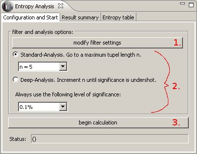
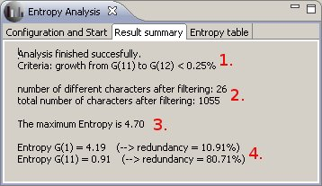
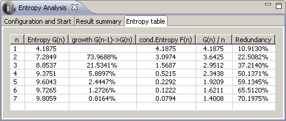

The Entropy Analysis
The Entropy Analysis Plugin calculates the measure of entropy referring to Claude Elwood Shannon [1].
It uses the texteditor as message source. After opening a text in the editor, you can start the calculation in the "Configuration and Start" tab. The results are shown in the tabs "Result summary" and "entropy table".
"Configuration and Start"
To get the calculation running do the following three steps:
- Modify the filter settings,
- Select the analysis mode ("deep" or "standard", see below)
- Click "begin calculation"

The analysis mode
- Standard--Analysis:
- the calculation regards statistical dependencies between maximal n letters. The n is defined by the user.
break criterion: The calculation ends, when one of the following is satisfied: the length n is reached or the level of significance is undershot.
- Deep-Analysis:
- the program automatically increments the number of letters which are used to calculate the statistical dependencies. The calculation stops when the growth in the entropy undershots the defined significance level.
"Result summary"
This tab shows a summary of the finished analysis. The following screenshot shows an example followed by an explanation of the values:

- Termination criterion: Here is shown because of what criterion the calculation terminated. There are two possibilities: either the defined tupellength is reached, or the level of significance is undershot by the growth of entropy.
- Number of letters: The values refer to the number of letters after the text has been filtered. The first value gives the number of different letters, the second value the number of all letters.
- Maximum Entropy: The value of the maximum entropy under the assumption of uniform distribution.
- Entropy: Two entropy values: The Entropy resulting of statistical dependencies of length 1 (single letters only) and the entropy regarding a maximum length of n letters (n-tupel).
"entropy table"
This tabular shows all the calculated values regarding statistical dependencies from single letters up to n-tupel.

G(n) is the entropy regarding n-tupels.
F(n) is the conditional entropy of the n-th letter considering the preceding (n-1) letters.
sources:
- [1]
Shannon, Claude E. ; Weaver, Warren: The mathematical theory of communication. Urbana and Chicago : University of Illinois Press, 1998. ISBN 0-252-72548-4